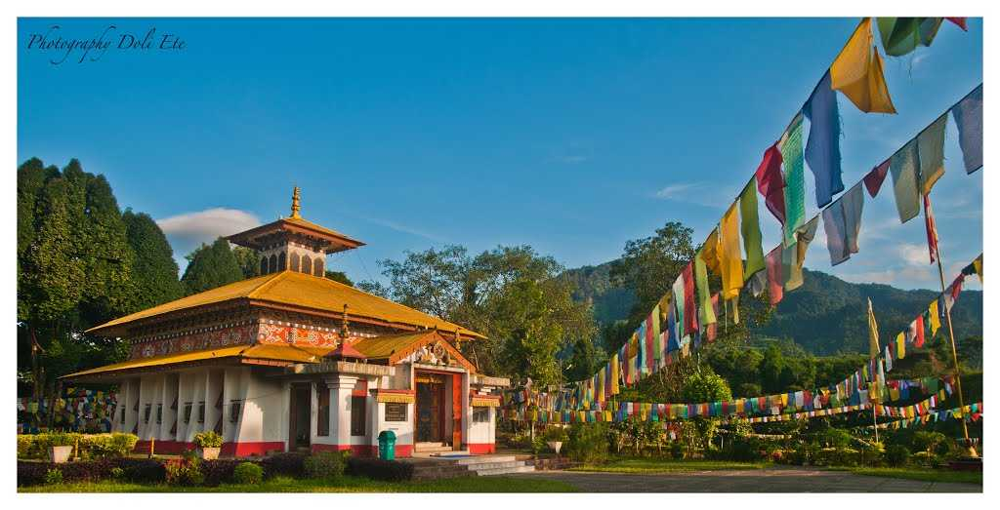
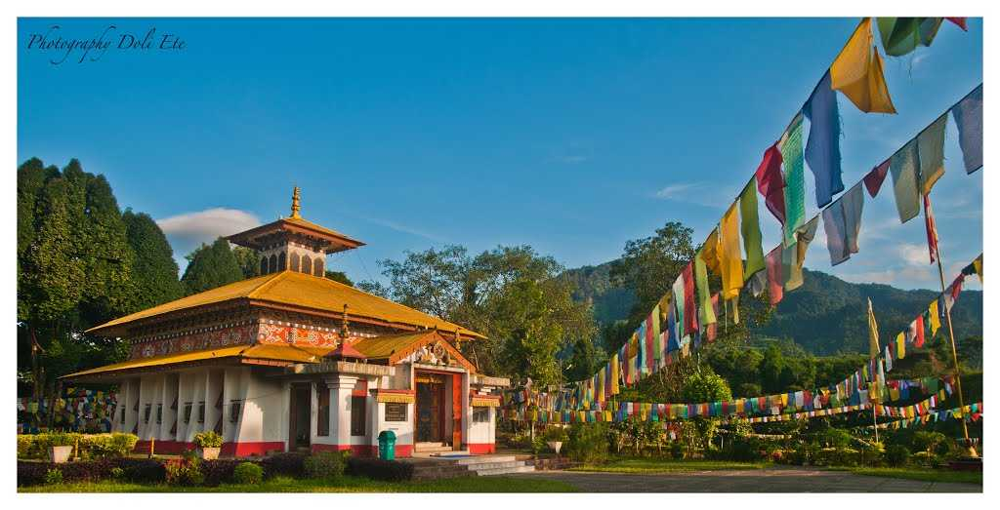
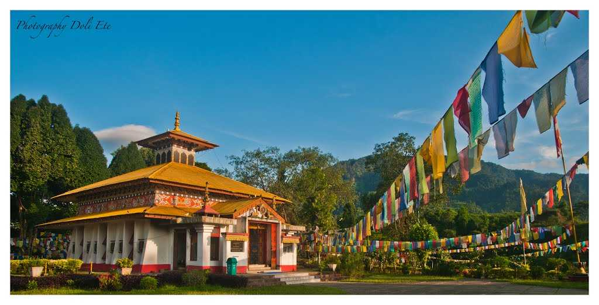
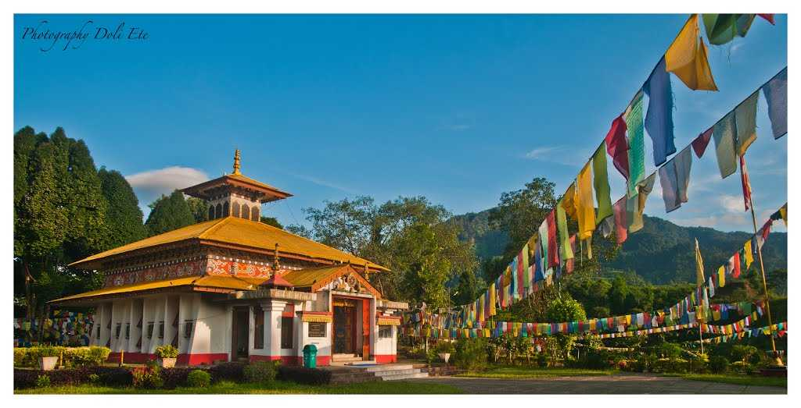

The capital is Itanagar
 



Arunachal Pradeshstate of India. It constitutes a mountainous area in the extreme northeastern part of the country and is bordered by the kingdom of Bhutan to the west, the Tibet Autonomous Region of China to the north, Myanmar (Burma) and the Indian state of Nagaland to the south and southeast, ...
Arunachal Pradesh, meaning “Land of the Rising Sun,” long has been a recognized region of the Indian subcontinent, receiving mention in such ancient Hindu literature as the Kalika-purana and the epic poems Mahabharata and Ramayana. Formerly known as the North East Frontier Agency (from the British colonial era), the area was part of Assam until it was made the Indian union territory of Arunachal Pradesh in 1972, and in 1987 it became an Indian state. The region, however, has been the subject of an ongoing sovereignty dispute between India and China. Area 32,333 square miles (83,743 square km). Pop. (2011) 1,382,611.Land
Itanagar town, capital of Arunachal Pradesh state, northeastern India. It is situated north of the Brahmaputra River in the southwestern part of the state. The state government established an industrial estate in the city to foster industrial development. Itanagar is the home of Arunachal University. Pop. (2001) 35,022; (2011) 59,490.
>